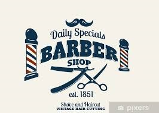

The French Barber Shop
Depuis ces dernières années les hommes se préoccupe de plus en plus de leur apparence, et particulièrement de leur coupe de cheveux, ils s’inspirent de leurs stars préférer comme les chanteurs ou sportifs. C’est pourquoi dans notre Barber Shop accueillons nos clients pour satisfaire au mieux leurs demandes, que ce soit par les coupes de cheveux mais aussi les différents soins pour le visage, les cheveux, et la barbe.
Le style du Barber Shop


Nous recevons nos clients dans un salon inspiré des premiers barber Shop Américain des années 1960, avec des sièges en cuirs classiques et très confortable. Le Barber se situe au 139 Boulevard Jean-Jaurès à Boulogne-Billancourt, il est ouvert tous les jours de 10h à 19h. l’équipe est composée de 3 experts barbier qui seront à votre écoute et présent pour répondre à toutes vos demandes.
139 Boulevard Jean-JaurèsLes differentes types de réalisation


Nous coiffons tous types de cheveux et de barbe que ce soit lisses, bouclés, ondulés, crépus. Nous réalisons toutes les coupes de cheveux et de barbes que ce soit des plus simples aux plus techniques.
Les stars font confiance à notre Barber
Des stars sont déjà venues dans notre Barber, et ont fait confiance à notre expérience et nos qualités pour s’occuper de leurs coupes. Comme Paul Pogba et Olivier Giroud les internationaux français champions du monde.